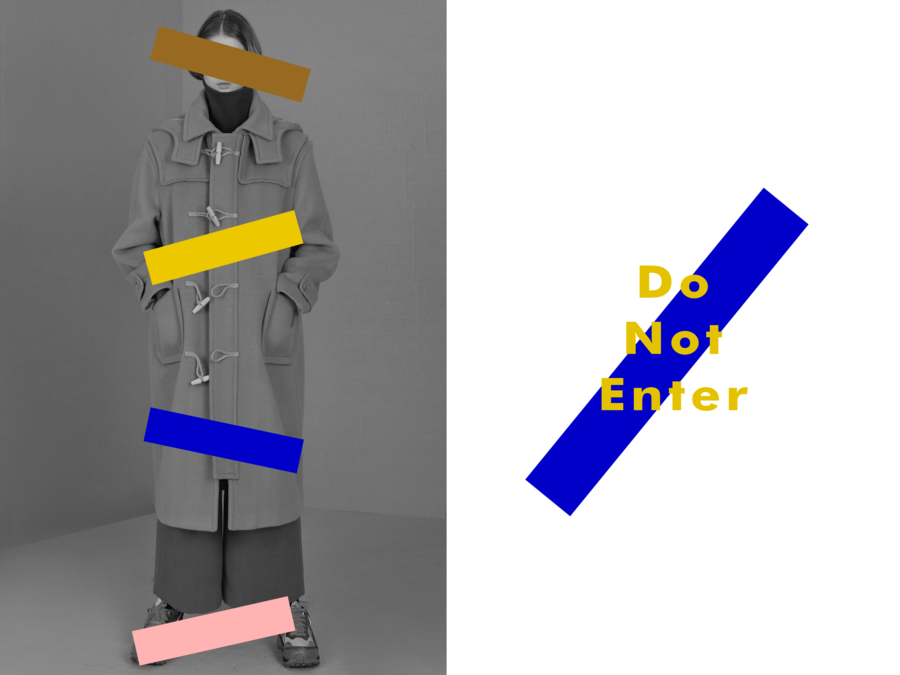
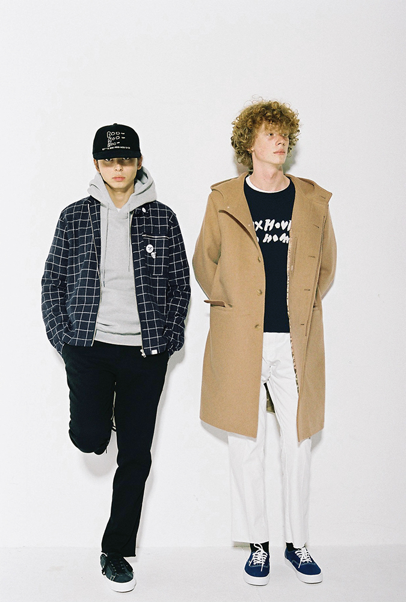
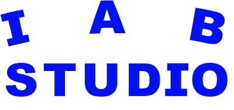
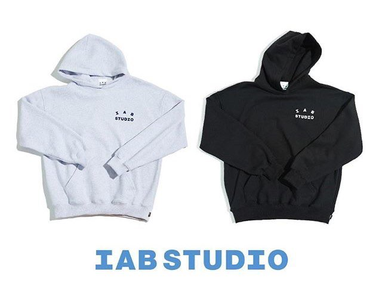

;
;
ADERERROR/ |
THISISNEVERTHAT/ |
IAB STUDIO/ |
MUSIC ONOFF |
;
아더에러 Adererror는 2014년 패션디자이너, 그래픽디자이너, 파티시에, MD 등이 모여 만든
한국 도메스틱 브랜드이다. 현재 해외에서도 아주 좋은 흥행을 이끌고 있으며, 메종키츠네, 퓨마
G-SHOCK 등등 많은 브랜드들과 협업하여 아더에러만의 독창적인 콜라보레이션을 이끌어냈다.
나는 자신들만의 디자인으로 승부를 하는게 취향이 확고해서 멋있어 보였다.
예전에 이들의 굿즈들 및 옷들을 많이 콜렉트 했던 것이 기억이난다.
▼ ADERERROR 19 F/W COLLECTION TEASER
▼ WEB SITE
;
;
2010년에 박인욱, 조나단, 최종규가 팀으로써 런칭한 대한민국의 캐주얼 의류 브랜드.
자체 온라인 스토어와 여타 유명 쇼핑몰에 입점하고 있다. 홍대에 오프라인샵도 위치해있는데,
홍대에서 자취할 떄, 자주 가게를 이용했었다. 감각적이고 무난해서 인지도도 꽤 높은편이다.
▼ WEB SITE
;
;